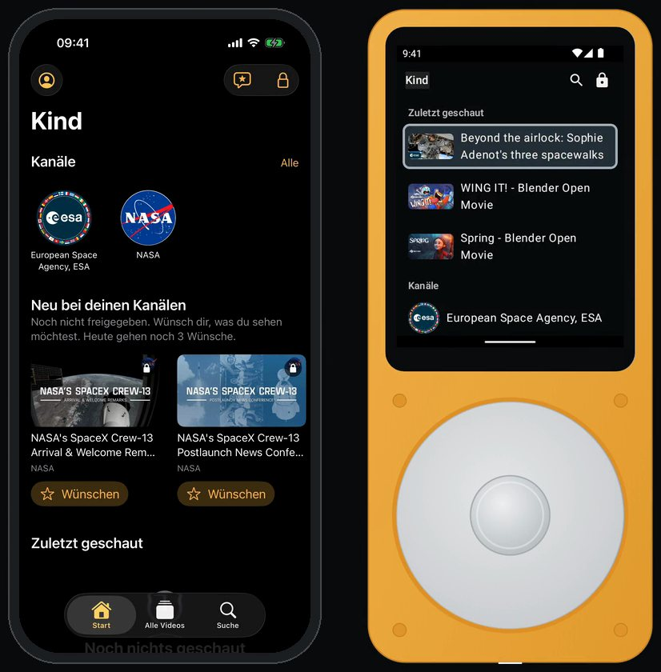
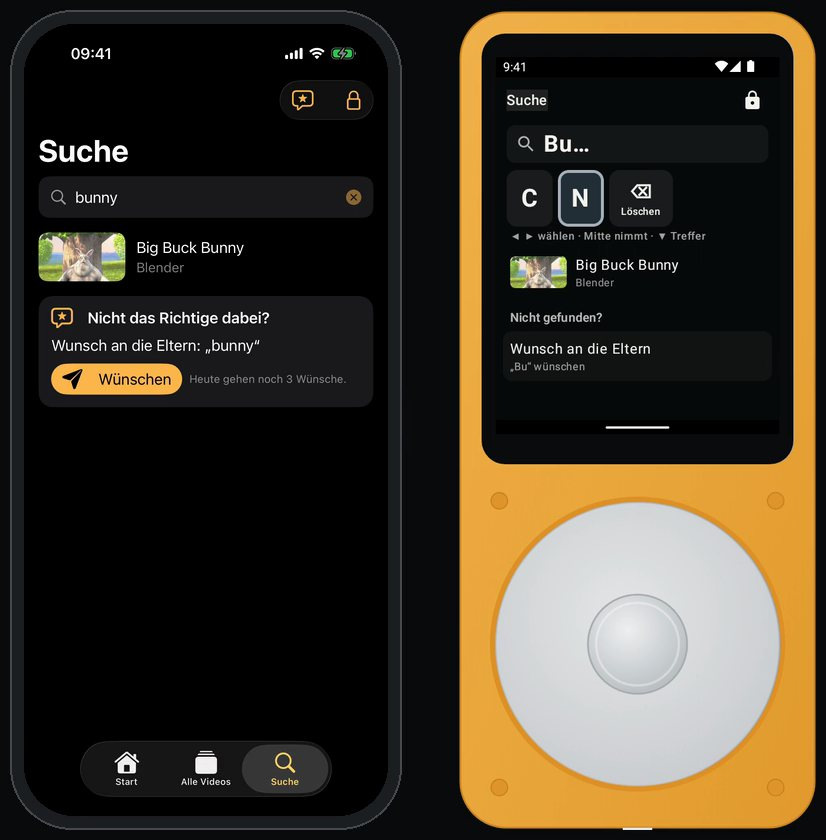
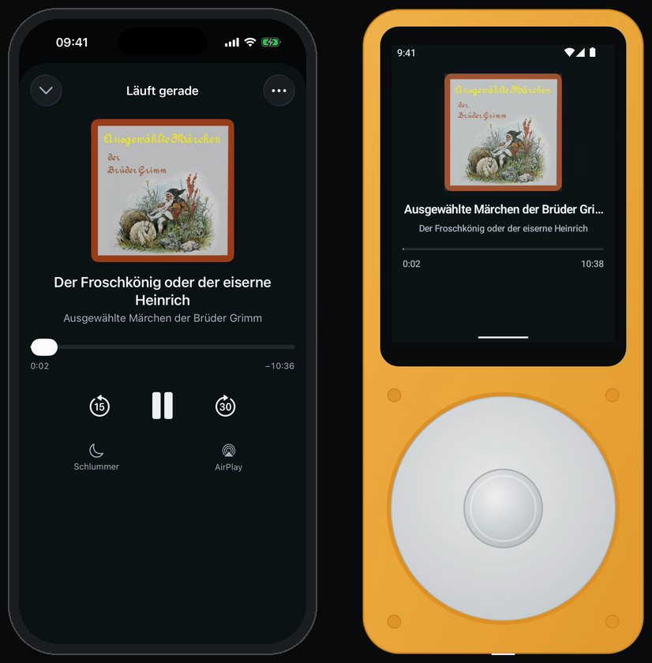

01
Begleiten statt überwachen
Eltern setzen den Rahmen. Kinder bekommen darin Raum für eigene Entscheidungen.
Mehr über AutonomieDigitale Werkzeuge für Kinder
SideKids entwickelt Apps, die Kindern geschützte, überschaubare Räume geben – ohne Aufmerksamkeitsmaschine, ohne Überwachung, mit einem klaren Weg zu mehr digitaler Selbstständigkeit.

Film
Unsere Idee
Gute Medienerziehung heißt nicht, digitale Medien grundsätzlich fernzuhalten – für Kinder unter drei Jahren raten Fachstellen allerdings zu möglichst gar keiner Bildschirmzeit. Sie heißt, Kindern einen verständlichen Rahmen zu geben, in dem sie ausprobieren, auswählen und Schritt für Schritt Verantwortung übernehmen können. Dazu gehören Erwachsene, die mitschauen, mithören und über das Erlebte sprechen.
01
Eltern setzen den Rahmen. Kinder bekommen darin Raum für eigene Entscheidungen.
Mehr über Autonomie02
Keine Feeds, keine Trends, kein Autoplay: Das Werkzeug wartet, statt Aufmerksamkeit zu fordern.
Die Less-Online-Idee03
Lokale Daten, offene Software und keine Geschäftsmodelle, die Kinderprofile brauchen.
Datenschutz ansehenApps

Kuratierte Videothek
Im App Store
Eltern prüfen Kanäle, Videos und Playlists; Kinder wählen frei innerhalb dieser Auswahl.

Hörspiele, Musik, Podcasts
Im Familientest
SidePlay spielt, was die Familie selbst besitzt oder abonniert hat – vom eigenen Server, auch im Flugmodus.
Ausprobieren
SideTube für iPhone und iPad ist kostenlos im App Store. Für Android gibt es eine Testfassung. SidePlay ist noch nicht öffentlich erhältlich.
Läuft im Familientest auf den Geräten der Familie; Veröffentlichung in Vorbereitung.
Interesse am Familientest oder Fragen? Kontakt über die Seite des Anbieters.